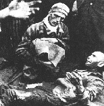

|
Doppelmord
von Dr. Rolf Kornemann
NSDAP-Parteiprogramm als Grundlage der Judenvernichtung
Grundlage der gesamten, gegen die Juden gerichteten Gesetzgebung waren die Punkte 4 und 5 des Parteiprogramms
der
NSDAP:

"Staatsbürger kann nur sein, wer Volksgenosse ist. Volksgenosse
kann nur sein,
wer deutschen Blutes ist. Kein Jude kann daher Volksgenosse sein"
(Punkt 4).
"Wer nicht Staatsbürger ist, soll nur als Gast in Deutschland leben (...)"
(Punkt 5).
Ein Instrument der Vertreibung und Ausrottung - um diesen "Gastzustand"
so rasch wie möglich zu beenden - waren die Enteignungen des Eigentums.
"Die Wegnahme von Gütern tritt hier
entschädigungslos ein, weil die Erhaltung des Aufgabenkreises eines unwürdigen Eigentümers
sich als völkischer Unrechtszustand darstellen würde."
4)
Die Rechtskonstruktion einer "Verwirkung" des Eigentums war die Konsequenz einer Theorie, die das Eigentum nur im Rahmen der nationalsozialistischen Herrschaftsordnung anerkannte.5)
Bei der wirtschaftlichen Vernichtung - als Vorstufe der "Endlösung" -
sind folgende Zeitabschnitte zu unterscheiden, in denen sich die Maßnahmen kontinuierlich verschärften, die Verantwortlichen immer rücksichtsloser vorgingen:
- "Machtergreifung" und Boykottag (1933)
- "Nürnberger Gesetze" (1935)
- Vierjahresplan (1936)
- November-Pogrom (1938) sowie
- Wannsee-Konferenz (1942)
Die Abgrenzung nach Zeitabschnitten ist insofern bedeutsam, als das "Dritte Reich" anfänglich in
der Judenfrage nicht ganz stringente Ziele verfolgte. Zahlreiche Funktionäre, hier vor allem wohl Hitler, wollten bei
reichen Juden deren Vermögen konfiszieren; Bedürftige dagegen sollten vernichtet werden.
"Darum gab
Hitler in einem verhältnismäßig frühen Stadium seiner Eroberung alle seine Pläne, die kapitalistische
Macht des Weltjudentums zu brechen, zu Gunsten eines Massakers jener europäischen Juden auf, die in seine Netze gerieten.
Hitler ließ sich von seinem "Gefühl" (...) leiten, der leichteren Beute, den proletarischen Juden, nachzugehen und
weitgehend gerade jene Art von Juden zu schonen, gegen die er seine schärfsten Angriffe richtete. Es war in jenem Stadium sowohl der Deportierung als auch des Massakers für Juden, die über geheime Kapitalien verfügten, möglich, sich ihr Leben zu erkaufen. Vor Hitlers eigenen Augen vollzogen sich die größten Geschäfte um das Entwischen vor dem den Juden bereiteten Los. Je ärmer die Gemeinschaft der östlichen Juden war, um so grausamer und vollständiger erfolgte ihre Ausrottung, aber in Deutschland waren soziale Stellung und akademische Grade unter Umständen selbst in Konzentrationslagern der Titel für das Überleben eines Juden. Obwohl Hitler während des ganzen Krieges seine Schimpfkanonaden gegen das "Finanzjudentum" fortsetzte, hatte er trotzdem niemals ernstlich versucht, die Gestapo an dem Schacher um das Leben begüteter Juden zu hindern."6)
© Copyright by Dr. Rolf Kornemann
© Layout Birgit Pauli-Haack 1997
|